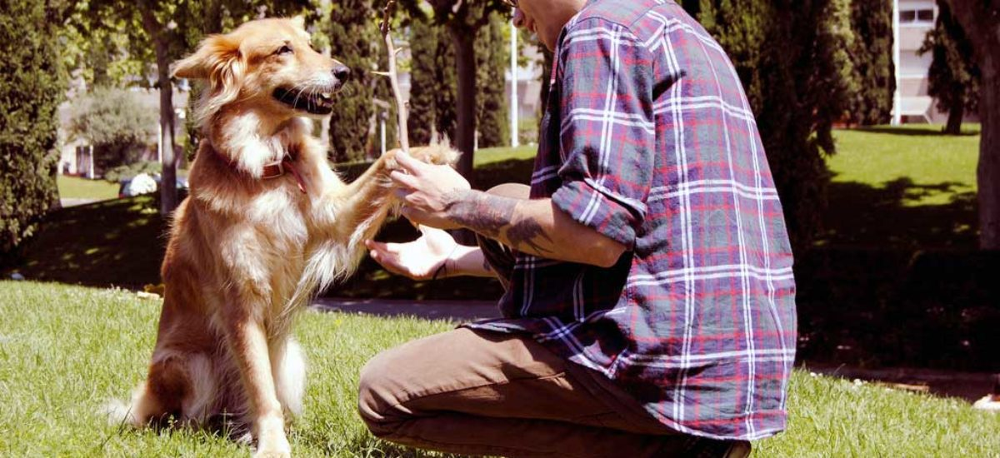
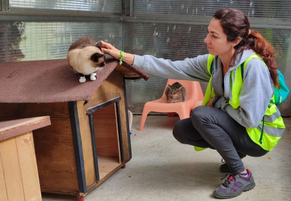
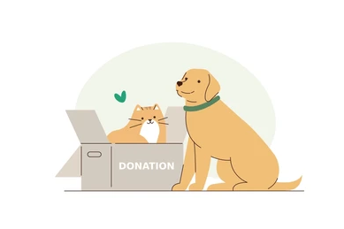

¡Bienvenidos a Huellas del Puerto!

La Fundación Huellas del Puerto es una organización sin fines de lucro de Valparaíso dedicada al rescate, rehabilitación y adopción responsable de perros y gatos en situación de abandono. Su objetivo es brindarles los cuidados necesarios mientras se les busca un hogar adecuado y responsable.
Nuestra Misión
Nuestra misión es rescatar y rehabilitar perros y gatos en situación de abandono, entregándoles atención y cuidados adecuados, para facilitar su adopción responsable y ayudar a que encuentren un hogar donde puedan tener una vida segura y digna.
Mascotas Destacadas


Formas de colaborar con nosotros

Adopcion
Dale una segunda oportunidad a un animal que busca un hogar lleno de cariño y responsabilidad.
Voluntariado
Dedica tu tiempo y habilidades para ayudar en el cuidado de nuestros animales y las actividades de la fundación.

Hogar temporal
Brinda un espacio seguro y lleno de cariño a un animal mientras encuentra una familia definitiva.


Donaciones
Tu aporte nos ayuda a cubrir alimentación, atención veterinaria y otros cuidados necesarios para nuestros animales.